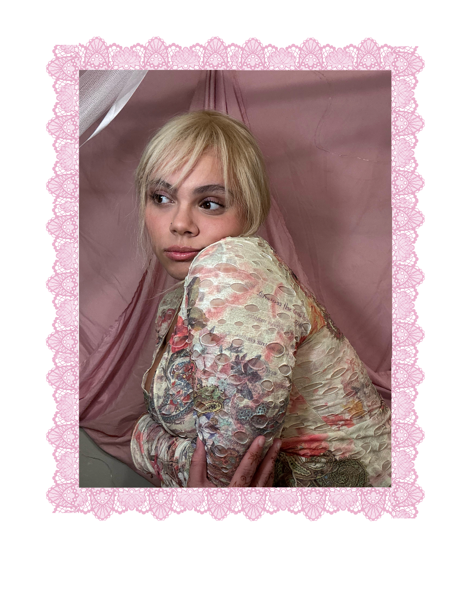

Yirabel Rodriguez is a South Florida based artist attending New World School of the Arts in downtown Miami.
Her art centers around social dynamics, domesticity and the female experience.
Her background in painting and multi media work has paved a path for her current practice as she completes her Bachelors of Fine Arts with a focus in Sculpture at the University of Florida.